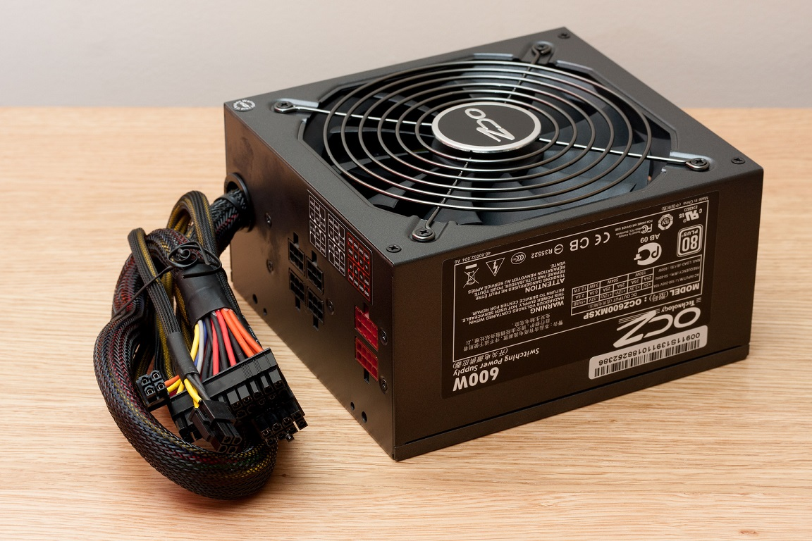
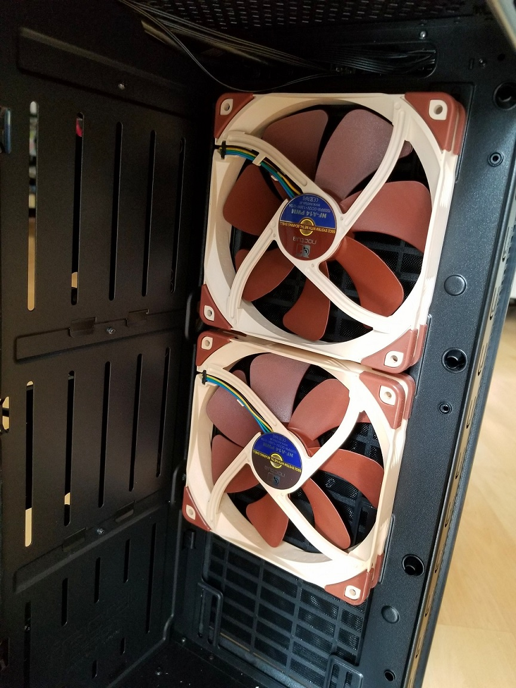
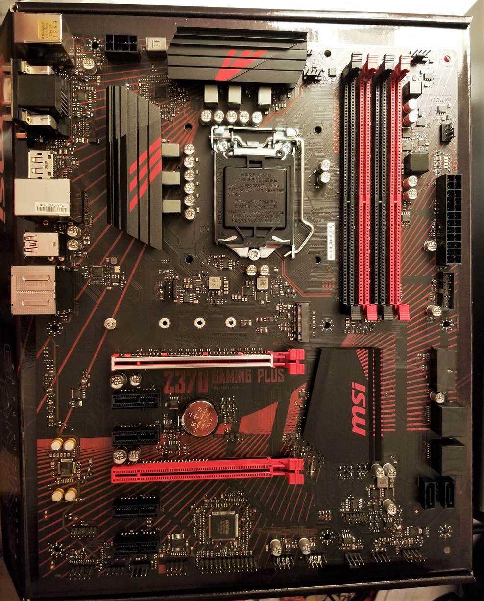

This Fractal Design Define S is
considered to be a mid-tower case.
This Fractal Design Define S is
considered to be a mid-tower case. A PSU (Power Supply Unit) is what provides the other components with power that the PC needs to function. Power supply units are designed to be highly robust in both their physical contruction and in their electronics. This is because other components such as the CPU and GPU need a very steady and constant flow of DC electricity to work. These components are also very sensitive to voltage changes. It is common for an entire motherboard and its components to fail due to a sudden failure of the power supply unit. Most power supplies usually provide a combination of 3.3V, 6V and 12V to the PC. Common brands of PSUs include: Antec, Corsair, EVGA, Cooler Master, and Thermaltake.
 Above: An average power supply unit, made by OCZ Technology. This unit is semi-modular, meaning some power cables can be removed or added. Photo source
The case of a computer is the shell that holds most of a desktop PC's components. Computer cases come in many different sizes, such as full tower (largest), mid tower, mini tower, small form factor and ultra small form factor. (smallest) Different cases will support different motherboards and more/less storage bays. Cases can also have windows on the side panels, such as on the Fractal Design Define S, shown below:
This Fractal Design Define S is
considered to be a mid-tower case.
Case fans provide ventilation for a PC's components. Many of a computer's components generate heat as a waste product, mainly from the CPU and GPU. By having fans pushing air into the case and fans sucking air out of the case, hot air can be removed from the inside of the computer, ensuring that the components stay relatively cool.
 Noctua fans are considered to be one of the best case fans that one can get. However, most PC enthusiasts believe that the colour scheme looks rather ugly when paired with more traditional coloured components.
The motherboard is a large PCB (Printed Circuit Board) where the all the communication between a computer's components happens. The CPU, GPU, RAM, and storage all are connected to the motherboard, where data is sent between the components. A motherboard also has all the ports that allow the connection of computer peripherals. Computer peripherals are the devices that one uses to send input and recieve output to/from a computer. Common computer perpherals include: a mouse, a keyboard, a monitor, computer speakers, and microphones.
 Above: an MSI Z370 motherboard. There is a wide assortment of ports.
The motherboard is a large PCB (Printed Circuit Board) where the all the communication between a computer's components happens. The CPU, GPU, RAM, and storage all are connected to the motherboard, where data is sent between the components. A motherboard also has all the ports that allow the connection of computer peripherals. Computer peripherals are the devices that one uses to send input and recieve output to/from a computer. Common computer perpherals include: a mouse, a keyboard, a monitor, computer speakers, and microphones.
Above: an MSI Z370 motherboard. There is a wide assortment of ports.